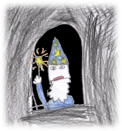

Mester Mikkel
Mester Mikkel version 1.1.
Tæt på pjat! track 02.
Musik og tekst er skrevet 2011 af
Lasse Steen Bohnstedt.
Visse rettigheder forbeholdt. *)
Mikkel må bruge magi for at vække menneskene.
Bemærk
Obs: Dette er en ufærdig side.
Sangen "Mester Mikkel" har tidligere ligget på internettet, men røg med i købet, da min hjemmeside blev slettet.
Foreløbig er det den gamle 1.1 version fra juni 2011, som jeg har lagt op.
Sangen "Mester Mikkel" har tidligere ligget på internettet, men røg med i købet, da min hjemmeside blev slettet.
Foreløbig er det den gamle 1.1 version fra juni 2011, som jeg har lagt op.
Audio
Det eneste audio, der eksisterer på Mester Mikkel, er en frygtelig MIDI fil.
Det kommer ikke lige op igen.
Jeg vil sandsynligvis bare indspille den med mig på guitar - på et tidspunkt :)
Det kommer ikke lige op igen.
Jeg vil sandsynligvis bare indspille den med mig på guitar - på et tidspunkt :)
Nodeark
Noder til Mester Mikkel 1.1.
Bemærk at der står den gamle, ikke længere eksisterende web-adresse i PDF'en.
Bemærk at der står den gamle, ikke længere eksisterende web-adresse i PDF'en.
Tekst
|
 Troldmanden på slottet, Rebecca 2011 |
I et zig-zag land fuld af mure
der står Mester Mikkel og kigger på os
og undrer sig over, hvorfor vi altid slås?
og hvorfor er vi altid så sure?
Mester Mikkel mumler så mærk'ligt
og hvisker fra toppen af visdommens tårn
Han ved han skal vise os det vi ikk' forstår:
At vores verden er noget særligt
Så han tæller stjerner om natten
Og lægger dem under hatten
Og gemmer dem i en pose magi
Fordi han skal bruge energi
Til at lave et kæmpe trylleri
Så vi vågner og lever før livet er forbi
2)
Når vi kører i vores biler
Så skælder vi ud, og så dytter vi højt
Og Mikkel forstår overhovedet ikk' en døjt
For hvorfor er der ingen der smiler?
Vi er helt vildt vilde med penge
Vi samler dem ind, og vi får aldrig nok
Hvad nu hvis han tog dem, mon så vi gik amok?
Se, det har Mikkel tænkt meget længe
Så han tæller stjerner om natten ...
3)
Han har ledt i tusinde bøger
og googlet og nu har han fundet et svar
Og hvis han skal bruge magien som han har
Så er der nogle ting han behøver
Så han ta'r ti liter af latter
Og varmer med masser af solskin deri
Og rigeligt flydende livlig fantasi
Men ikke mere end stjernerne kan være der
Og han tæller stjerner om natten ...
4)
Med et brøl som hundrede løver
Der springer en flamme fra gryden til vejrs
Imens råber Mikkel et gammelt tryllevers
Og himlen over tårnet den gløder
Midt om natten regner det farver
Og himlen den drypper med dråber af lys
Og alle de vågner og stirrer med et gys
mod Mikkels tårn der buldrer og brager
Og han tæller stjerner om natten ...
5)
BA-DA-BUM! bli'r biler til buske
Og mønter gror ben og begynder at gå
med sedler på ryggen som sommerfugle små
Og blafrer væk i blomstrede sværme
Men nu mangler Mikkel det sidste
For vi skal være glade og grine hver dag
Han si'r vi skal hjælpe, og alle råber JA!
og lover vi vil gøre vores bedste
Så vi tæller stjerner om natten ...
Inspiration
...
Historik
...
2012-06-06
"Mester Mikkel" version 1.1